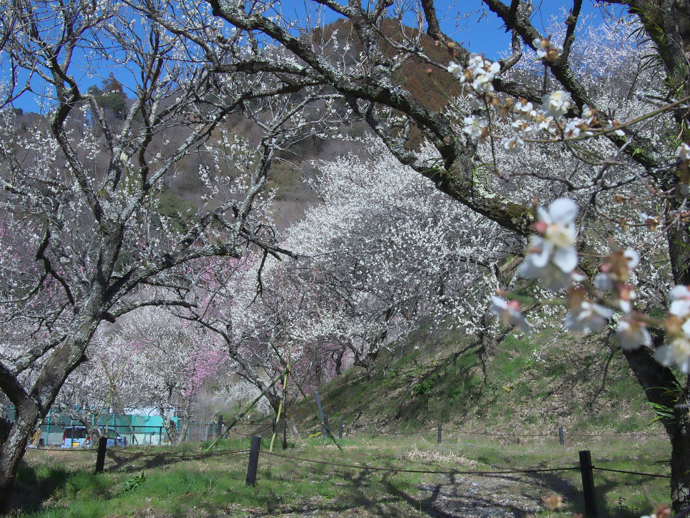
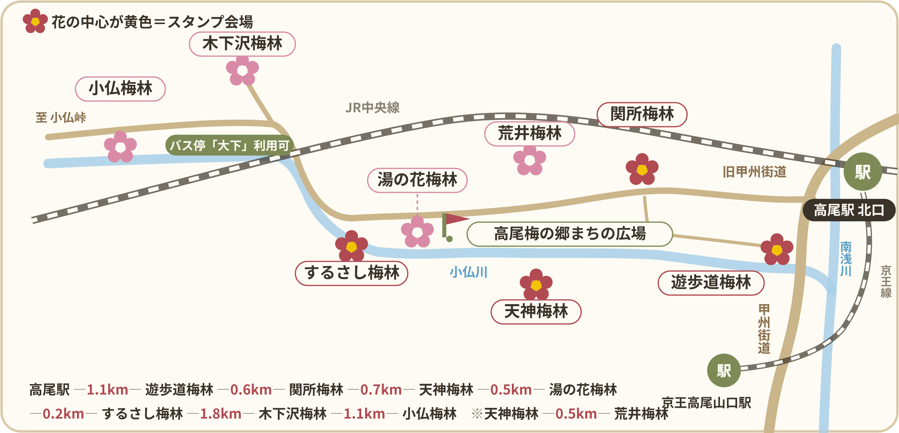
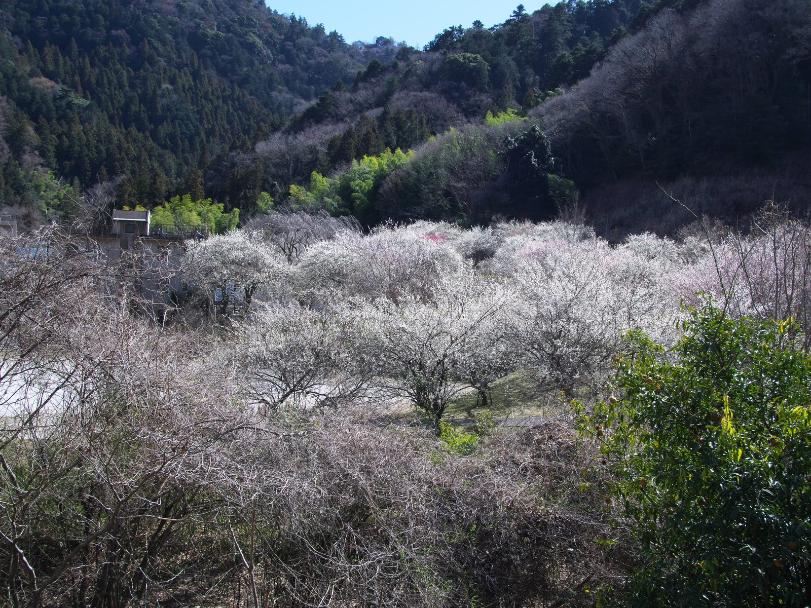

コース1 スタンプ対象の4会場をめぐる
- 高尾駅 北口／高尾山口
- 遊歩道梅林
- 関所梅林
- 天神梅林
- するさし梅林
観梅記念スタンプハイクの4会場を、駅から順に歩く定番のコースです。

歩いて、香って、スタンプを集めよう
梅林会場には駐車場がありませんので、お車での来場は固くお断りします。
旧甲州街道と小仏川に沿う八つの梅林。民家の庭先や山の斜面、畑地まで、谷じゅうに咲く一万本の梅。香りに包まれて、高尾梅郷をゆっくり歩いてみませんか。
BLOOMING STATUS
梅の開花状況は、八王子市の「高尾梅郷梅まつり」のページで随時お知らせします。お出かけの前にご確認ください。
八王子市の開花情報(準備中)梅林ごとに見ごろは異なります。木下沢・するさしは、特別開放の期間中のみ入れます。
EVENTS
会期中、梅林やまちの広場でさまざまな催しがあります。時間と会場は、決まり次第こちらに掲載します。
催しの内容は準備中です。雨天の場合は中止となる催しがあります。
MAP
旧甲州街道と小仏川に沿って、8つの梅林が点在します。駅から歩いて回れます。

| 高尾駅(北口)→ 遊歩道梅林 | 約1.1km |
|---|---|
| 遊歩道 → 関所 | 約0.6km |
| 関所 → 天神 | 約0.7km |
| 天神 → 湯の花 | 約0.5km |
| 湯の花 → するさし | 約0.2km |
| するさし → 木下沢 | 約1.8km |
| 木下沢 → 小仏 | 約1.1km |
| 天神 → 荒井 | 約0.5km |

MODEL COURSES
歩く時間や体力に合わせて、3つのコースから選べます。
観梅記念スタンプハイクの4会場を、駅から順に歩く定番のコースです。
高尾山に登る往復の途中に、梅林をめぐります。歩き慣れた方向けのコースです。
特別開放の木下沢梅林とするさし梅林を経由するコースです。木下沢梅林へは、京王バスの「大下」バス停が利用できます。
STAMP HIKE
梅を楽しみながら、4つの会場をめぐろう。
遊歩道小名路会場
梅の郷まちの広場
摺指まちの広場
今年の内容(時間・賞品・対象会場)は、決まり次第お知らせします。
BUS TIMETABLE
梅林へは、京王バスも利用できます。時刻表は京王バスの公式ページでご確認ください。
ダイヤは変更されることがあります。お出かけの前に、最新の時刻をご確認ください。
木下沢梅林へは「大下」バス停が利用できます。梅林会場には駐車場がありません。公共交通機関でお越しください。